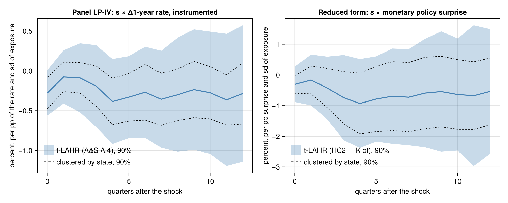

US states: monetary policy and manufacturing exposure
A panel LP-IV on public data, in the setting of Almuzara & Sancibrián (2026, §3.4): how much more does personal income fall in states more exposed to manufacturing after a rise in the 1-year Treasury rate, instrumented by monetary policy surprises?
The data are not part of the package. Two scripts in examples/us_states/ download them and build the panel into docs/data/us_states/ (gitignored), then estimate:
julia --project examples/us_states/build.jl
julia --project examples/us_states/estimate.jlData
- Outcome. 100 × log personal income (seasonally adjusted, nominal), 50 states and DC, quarterly, 1999Q1–2019Q4 (84 quarters). Source: BEA, State quarterly personal income (SQINC1, line 1). BEA does not publish quarterly population for the early years, so income is total, not per capita; the quarter effects absorb common prices and trends.
- Exposure $s_i$. The manufacturing share of earnings by place of work in 1998, before the sample (SQINC5N, line 500 over line 35), standardised across states.
- Endogenous regressor. $s_i \Delta\mathrm{GS1}_t$: the quarterly change in the 1-year Treasury constant-maturity rate (FRED
GS1, quarterly average of the monthly series). The surprises are news, so they predict changes in the rate, not its level (as in Cloyne et al. 2023, who instrument the change in the one-year rate). - Instrument. $s_i\,\mathrm{MP}_t$: the Jarociński & Karadi (2020) monetary policy surprises ("poor man's" sign restrictions,
MP_pm, updated series ofgithub.com/marekjarocinski/jkshocks_update_fed, CC BY 4.0), summed over each quarter's months.
d = readtable("docs/data/us_states/processed/state_panel.csv") # examples/us_states/csv.jl
iv = panellp(@formula(ldiff(lpi) ~ (s & firstdiff(gs1) ~ s & mp) + fe(fips) + fe(t)), d;
id = :fips, time = :t, horizon = 12, estimator = LagAugmented())
rf = panellp(@formula(ldiff(lpi) ~ s & mp + fe(fips) + fe(t)), d;
id = :fips, time = :t, horizon = 12, estimator = LagAugmented(),
shock = "s & mp")State effects absorb level differences; quarter effects absorb every aggregate, so the coefficient is the differential response of a state one standard deviation more exposed to manufacturing (in percent, cumulated from $t-1$ to $t+h$). ICLags selects $\hat p = 0$, so each horizon has one lag of $\Delta y$ and of the endogenous regressor ($p(h) = \max\{1, \min(h, \hat p)\}$).
First stage
| h | KP F, by period (t-LAHR) | KP F, clustered by state | KP F, robust |
|---|---|---|---|
| 0 | 1.9 | 206,219 | 34.7 |
| 2 | 2.1 | 214,082 | 37.8 |
| 4 | 2.0 | 198,615 | 35.3 |
| 6 | 2.0 | 196,489 | 35.2 |
| 8 | 2.0 | 198,236 | 35.2 |
| 12 | 2.0 | 165,222 | 35.1 |
The same first stage looks very strong clustered by state, strong under heteroskedasticity, and weak clustered by period. The instrument varies only over 84 quarters (the exposure is fixed), and the quarterly surprise explains about a quarter of the change in the 1-year rate. Clustering by state treats the 84 values of the surprise as replicated across 51 states; robust standard errors treat the 4,182 observations as independent. Clustered by period, the effective sample size is $T$, as Almuzara & Sancibrián stress for the second stage (their Remark 2). It applies to the first stage too: here the IV is weakly identified.
Responses

The figure comes from julia --project=docs examples/us_states/figure.jl. It shows the t-LAHR bands shaded and the state-clustered bands dashed.
The LP-IV coefficient (percent per percentage point of the 1-year rate, per standard deviation of exposure) and its standard error under four variances:
| h | coef | t-LAHR (A.4) | by state | two-way | Driscoll–Kraay |
|---|---|---|---|---|---|
| 0 | −0.28 | 0.17 | 0.12 | 0.17 | 0.13 |
| 2 | −0.09 | 0.26 | 0.11 | 0.14 | 0.21 |
| 4 | −0.38 | 0.32 | 0.17 | 0.18 | 0.27 |
| 6 | −0.27 | 0.35 | 0.21 | 0.20 | 0.26 |
| 8 | −0.30 | 0.44 | 0.19 | 0.20 | 0.28 |
| 12 | −0.28 | 0.52 | 0.23 | 0.22 | 0.40 |
The point estimates are negative throughout: income falls more in manufacturing states after a rise in the rate. t-LAHR's standard errors are 1.5 to 2.7 times those clustered by state (2.7 at h = 11). With a weak first stage, though, the IV intervals are not reliable under any of these variances.
The reduced form, the LP on the observed surprise $s_i\,\mathrm{MP}_t$ (A&S's main setting), does not depend on the strength of the instrument. Its t-LAHR intervals use the full refinement, HC2 with Imbens–Kolesár degrees of freedom (TLAHR()):
| h | coef | t-LAHR (refined) | by state | two-way | Driscoll–Kraay |
|---|---|---|---|---|---|
| 0 | −0.31 | 0.30 | 0.17 | 0.27 | 0.19 |
| 2 | −0.43 | 0.53 | 0.38 | 0.49 | 0.41 |
| 4 | −0.93 | 0.74 | 0.59 | 0.74 | 0.61 |
| 6 | −0.69 | 0.79 | 0.67 | 0.80 | 0.69 |
| 8 | −0.59 | 0.90 | 0.70 | 0.84 | 0.77 |
| 12 | −0.54 | 1.03 | 0.65 | 0.84 | 1.01 |
The Imbens–Kolesár degrees of freedom are about 6, although the synthetic regression has 70 to 82 periods. The surprise series is lumpy: six quarters (2001Q1, Q2 and Q4, 2007Q3, 2008Q4, 1999Q4) carry 76% of its sum of squares. They also carry about three quarters of the squared influence weights of the shock coefficient, which set the Imbens–Kolesár degrees of freedom; the refined 90% intervals widen accordingly. The reduced form agrees in sign with the IV. No response, in either the reduced form or the IV, is significant at 10% with t-LAHR.
Data sources: BEA Regional Economic Accounts (public domain); Board of Governors of the Federal Reserve System, H.15, via FRED (GS1); Jarociński, M. and P. Karadi (2020), "Deconstructing Monetary Policy Surprises — The Role of Information Shocks", American Economic Journal: Macroeconomics 12(2), 1–43, updated series (CC BY 4.0).